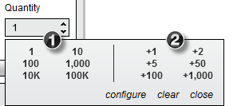
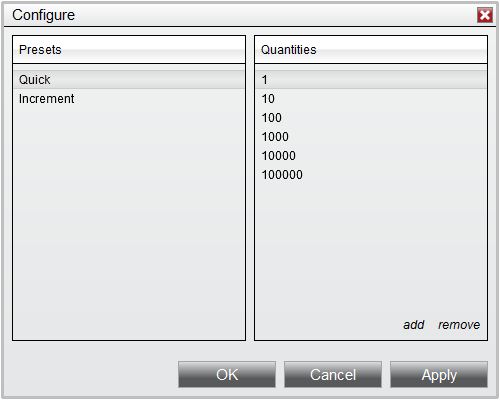

|
<< Click to Display Table of Contents >> Quantity Selector |


|
Quantity Selector
|
<< Click to Display Table of Contents >> Quantity Selector |
|
The Quantity Selector is a standard control available from all order entry features which allows you to select the number of contracts that are prepared for an custom order.
Minimum Quantity SizeThe Quantity Selector is smart in that it will automatically fill in the minimum quantity value depending on the type of instrument that is selected. This is particularly useful when switching from one instrument type to another.
The table below will show the minimum quantity for each instrument type:
|
 Increasing or Decreasing Quantity
Increasing or Decreasing Quantity
Adjusting QuantityThe Quantity Selector allows you to type directly in the quantity field to specify an exact quantity with your keyboard.
You can also control the quantity using the up/down arrows next to the quantity selector, or by using the scroll wheel on your mouse. These methods will change the quantity depending on the instrument type's minimum values described in the "Default Order Quantities" section above.
For example with a Stock selected, simply scrolling up with your mouse will change a quantity of 100 to 200. Holding the CTRL key on your keyboard and modifying the order quantity will increase or decreasing the value by 10. This means if you were to hold the CTRL key while scrolling on the Quantity Selector will increase Stock quantity from 100 to 1,100. |
Using Preset QuantitiesMiddle mouse clicking on the Quantify Selector will display a Preset Quantity Pad which will allow you to optionally predefine the number of contracts used as the quantity.

For example if your current quantity was set to a value of 1, and you wanted to quickly set the quantity to 10, you would simply select 10 from the left side of the Preset Quantity Pad. If you wanted to increase the current quantity by 2, you would select the +2 from the right side of the Preset Quantity Pad. Doing so will increase the current value from 1 to 3. Selecting +2 again would then change the quantity from 3 to 5.
Selecting the "clear" button will reset the current order quantity to the instrument's minimum order quantity size.
Customizing Preset QuantitiesYou can customize the preset quantity values that are displayed in these fields by selecting the "configure" button from the Preset Quantity Pad.

Adding a Custom Preset1.Select the desired Preset (Quick or Increment) from the left side Presets panel 2.Press the "add" button in the right panel 3.Set the desired Quantity value 4.Press OK
Removing a Custom Preset
|